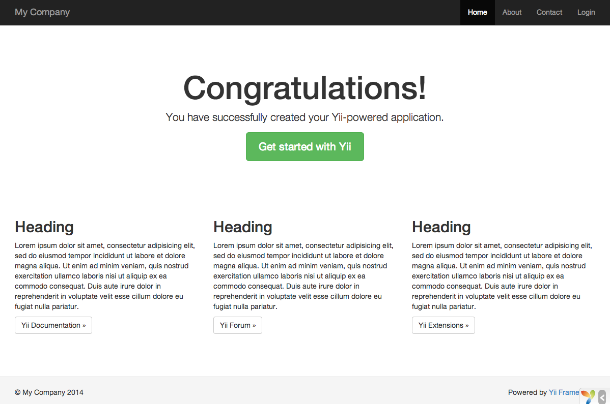

安装 Yii ¶
你可以通过两种方式安装 Yii：使用 Composer 或下载一个归档文件。推荐使用前者，这样只需执行一条简单的命令就可以安装新的扩展或更新 Yii 了。
注意：和 Yii 1 不同，以标准方式安装 Yii 2 时会同时下载并安装框架本身和一个应用程序的基本骨架。
通过 Composer 安装 ¶
如果还没有安装 Composer，你可以按 getcomposer.org 中的方法安装。在 Linux 和 Mac OS X 中可以运行如下命令：
curl -s http://getcomposer.org/installer | php
mv composer.phar /usr/local/bin/composer
在 Windows 中，你需要下载并运行 Composer-Setup.exe。
如果遇到任何问题或者想更深入地学习 Composer，请参考 Composer 文档（英文），Composer 中文。
Composer 安装后，切换到一个可通过 Web 访问的目录，执行如下命令即可安装 Yii ：
composer create-project --prefer-dist yiisoft/yii2-app-basic basic
如上命令会将 Yii 安装在名为 basic 的目录中。
技巧：如果你想安装 Yii 的最新开发版本，可以使用如下命令，它添加了一个 stability 选项（中文版）:
composer create-project --prefer-dist --stability=dev yiisoft/yii2-app-basic basic注意，Yii 的开发版(dev 版)不应该用于生产环境中，它可能会破坏运行中的代码。
通过归档文件安装 ¶
通过归档文件安装 Yii 包括两个步骤：
- 从 yiiframework.com 下载归档文件。
- 将下载的文件解压缩到 Web 目录中。
修改
config/web.php文件，给cookieValidationKey配置项添加一个密钥（若你通过 Composer 安装，则此步骤会自动完成）：// !!! 在下面插入一段密钥（若为空） - 以供 cookie validation 的需要
'cookieValidationKey' => '在此处输入你的密钥',
其他安装方式 ¶
上文介绍了两种安装 Yii 的方法，安装的同时也会创建一个立即可用的 Web 应用程序。对于小的项目或用于学习上手，这都是一个不错的起点。
但是其他的安装方式也存在：
验证安装的结果 ¶
安装完成后，就可以使用浏览器通过如下 URL 访问刚安装完的 Yii 应用了：
http://localhost/basic/web/index.php
这个 URL 假设你将 Yii 安装到了一个位于 Web 文档根目录下的 basic 目录中，且该 Web 服务器正运行在你自己的电脑上（localhost）。你可能需要将其调整为适应自己的安装环境。

你应该可以在浏览器中看到如上所示的 “Congratulations!” 页面。如果没有，请通过以下任意一种方式，检查当前 PHP 环境是否满足 Yii 最基本需求：
- 通过浏览器访问 URL
http://localhost/basic/requirements.php 执行如下命令：
cd basic php requirements.php
你需要配置好 PHP 安装环境，使其符合 Yii 的最小需求。主要是需要 PHP 5.4 以上版本。如果应用需要用到数据库，那还要安装 PDO PHP 扩展 和相应的数据库驱动（例如访问 MySQL 数据库所需的 pdo_mysql）。
配置 Web 服务器 ¶
>补充：如果你现在只是要试用 Yii 而不是将其部署到生产环境中，本小节可以跳过。
通过上述方法安装的应用程序在 Windows，Max OS X，Linux 中的 Apache HTTP 服务器或 Nginx HTTP 服务器 上都可以直接运行。
在生产环境的服务器上，你可能会想配置服务器让应用程序可以通过 URL http://www.example.com/index.php 访问而不是 http://www.example.com/basic/web/index.php。这种配置需要将 Web 服务器的文档根目录指向 basic/web 目录。可能你还会想隐藏掉 URL 中的 index.php，具体细节在 URL 解析和生成 一章中有介绍，你将学到如何配置 Apache 或 Nginx 服务器实现这些目标。
>补充：将 basic/web 设置为文档根目录，可以防止终端用户访问 basic/web 相邻目录中的私有应用代码和敏感数据文件。禁止对其他目录的访问是一个不错的安全改进。
>补充：如果你的应用程序将来要运行在共享虚拟主机环境中，没有修改其 Web 服务器配置的权限，你依然可以通过调整应用的结构来提升安全性。详情请参考共享主机环境 一章。
推荐使用的 Apache 配置 ¶
在 Apache 的 httpd.conf 文件或在一个虚拟主机配置文件中使用如下配置。注意，你应该将 path/to/basic/web 替换为实际的 basic/web 目录。
# 设置文档根目录为 “basic/web”
DocumentRoot "path/to/basic/web"
<Directory "path/to/basic/web">
RewriteEngine on
# 如果请求的是真实存在的文件或目录，直接访问
RewriteCond %{REQUEST_FILENAME} !-f
RewriteCond %{REQUEST_FILENAME} !-d
# 如果请求的不是真实文件或目录，分发请求至 index.php
RewriteRule . index.php
# ...其它设置...
</Directory>
推荐使用的 Nginx 配置 ¶
为了使用 Nginx，你应该已经将 PHP 安装为 FPM SAPI 了。使用如下 Nginx 配置，将 path/to/basic/web 替换为实际的 basic/web 目录，mysite.local 替换为实际的主机名以提供服务。
server {
charset utf-8;
client_max_body_size 128M;
listen 80; ## 监听 ipv4 上的 80 端口
#listen [::]:80 default_server ipv6only=on; ## 监听 ipv6 上的 80 端口
server_name mysite.local;
root /path/to/basic/web;
index index.php;
access_log /path/to/basic/log/access.log main;
error_log /path/to/basic/log/error.log;
location / {
# 如果找不到真实存在的文件，把请求重定向给 index.php
try_files $uri $uri/ /index.php?$args;
}
# 若取消下面这段的注释，可避免 Yii 接管不存在文件的处理过程（404）
#location ~ \.(js|css|png|jpg|gif|swf|ico|pdf|mov|fla|zip|rar)$ {
# try_files $uri =404;
#}
#error_page 404 /404.html;
location ~ \.php$ {
include fastcgi.conf;
fastcgi_pass 127.0.0.1:9000;
#fastcgi_pass unix:/var/run/php5-fpm.sock;
}
location ~ /\.(ht|svn|git) {
deny all;
}
}
使用该配置时，你还应该在 php.ini 文件中设置 cgi.fix_pathinfo=0 ，能避免掉很多不必要的 stat() 系统调用。
还要注意当运行一个 HTTPS 服务器时，需要添加 fastcgi_param HTTPS on; 一行，这样 Yii 才能正确地判断连接是否安全。